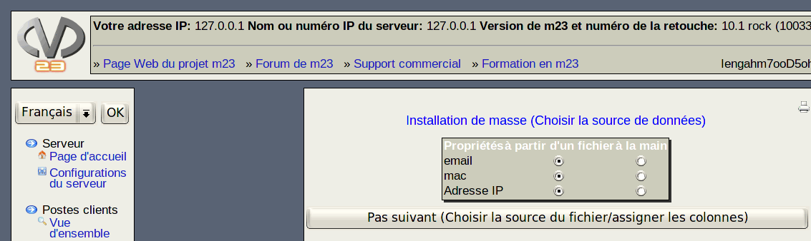

suivant:
Choisir la source de
monter:
Outils de masse
précédent:
Trois méthodes sont possibles:
Table des matières
Choisir la source de données

Choisissez la source pour les propriétés qui doivent être entrées. Les valeurs peuvent être lues depuis un fichier texte ou entrées manuellement.
dodger 2014-08-06